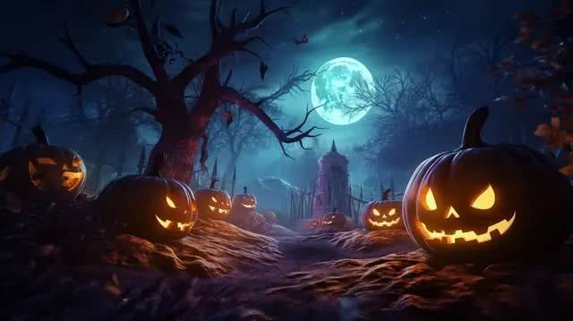

Instrucciones: Haz clic sobre los fantasmas para cazarlos. ¡Evita que escapen! El marcador cuenta tus aciertos y la velocidad aumenta.
Instituto Tecnológico de Pachuca - Ingeniería en Sistemas Computacionales
